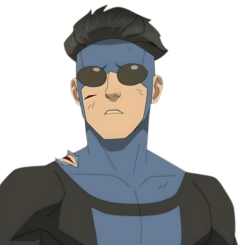
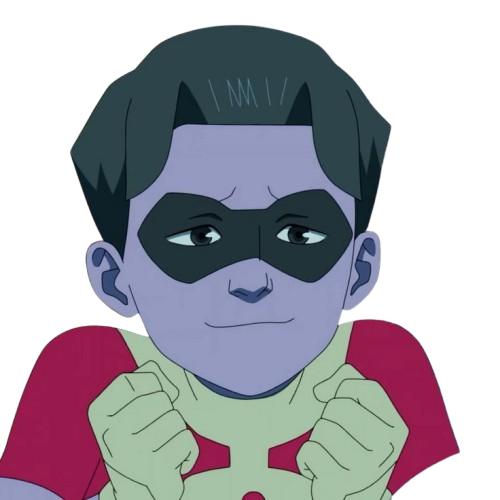
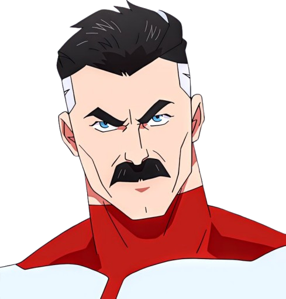
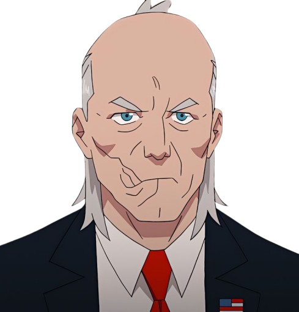

A história de Invencível, tanto nos quadrinhos quanto na série animada, centra-se em Mark Grayson, um
adolescente que descobre ter superpoderes, herdados de seu pai, Omni-Man, um poderoso alienígena da
raça Viltrumita. A trama explora a jornada de Mark enquanto ele aprende a usar seus poderes como o
super-herói Invencível, enfrentando desafios tanto pessoais quanto de combate ao crime e ameaças
cósmicas, enquanto lida com as complexidades de sua herança
Principais Personagens

mark Grayson

Oliver Grayson

Nola Grayson

Cecil
Os três principais vilões de Invencivel
| Nome | Foto | Sobre |
|---|---|---|
| Thragg |

|
Thragg é o principal antagonista da série de quadrinhos e animação "Invencível". Ele é o líder do Império Viltrumita e é considerado o viltrumita mais poderoso de todos. Thragg é conhecido por sua força, resistência, velocidade e inteligência, além de um fator de cura avançado. Ele é um estrategista habilidoso e um líder carismático, capaz de inspirar outros viltrumitas e até mesmo outros seres. |
| Conquista |
|
Conquista é um personagem importante na série de quadrinhos e animação "Invencível". Ele é um viltrumita poderoso, considerado o segundo mais forte do Império Viltrumita, atrás apenas de Thragg. Conquista é conhecido por sua força, experiência em combate e brutalidade, sendo um dos principais antagonistas e adversários de Invencível |
| angstrom levy |
|
Angstrom Levy é o antagonista secundário de Invincible , estreando como o principal antagonista da 2ª temporada e um dos dois principais antagonistas (ao lado de Conquest ) da 3ª temporada . Ele era um humano brilhante com a habilidade de atravessar diferentes dimensões. |